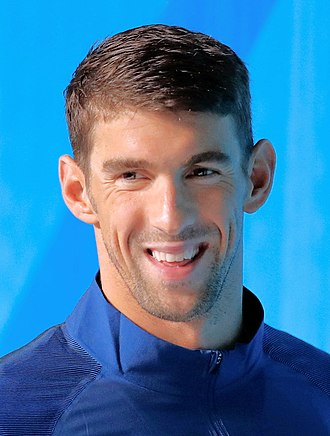

Source: Wikipedia
Michael Fred Phelps II (born June 30, 1985) is an American former competitive swimmer. He is the most successful and most decorated Olympian of all time with a total of 28 medals. Phelps also holds the all-time records for Olympic gold medals (23), Olympic gold medals in individual events (13), and Olympic medals in individual events (16). When Phelps won eight gold medals at the 2008 Beijing Games, he broke fellow American swimmer Mark Spitz's 1972 record of seven first-place finishes at any single Olympic Games. At the 2004 Summer Olympics in Athens, Phelps already tied the record of eight medals of any color at a single Games by winning six gold and two bronze medals. At the 2012 Summer Olympics in London, Phelps won four gold and two silver medals, and at the 2016 Summer Olympics in Rio de Janeiro, he won five gold medals and one silver. This made him the most successful athlete of the Games for the fourth Olympics in a row.
Phelps is the long course world record holder in the men's 400-meter individual medley as well as the former long course world record holder in the 200-meter freestyle, 100-meter butterfly, 200-meter butterfly, and 200-meter individual medley. He has won 82 medals in major international long course competitions, of which 65 were gold, 14 silver, and three bronze, spanning the Olympics, the World Championships, and the Pan Pacific Championships. Phelps's international titles and record-breaking performances have earned him the World Swimmer of the Year Award eight times and American Swimmer of the Year Award eleven times, as well as the FINA Swimmer of the Year Award in 2012 and 2016. Phelps earned Sports Illustrated magazine's Sportsman of the Year award due to his unprecedented Olympic success in the 2008 Games.
After the 2008 Summer Olympics, Phelps started the Michael Phelps Foundation, which focuses on growing the sport of swimming and promoting healthier lifestyles. Phelps retired following the 2012 Olympics, but he made a comeback in April 2014. At the 2016 Summer Olympics in Rio de Janeiro, his fifth Olympics, he was selected by his team to be the flag bearer of the United States at the 2016 Summer Olympics Parade of Nations. He announced his second retirement on August 12, 2016, having won more medals than 161 countries. He is widely regarded as the greatest swimmer of all time and is often considered to be one of the greatest athletes of all time.
Phelps was born in Baltimore, Maryland,[6] and raised in the Rodgers Forge neighborhood of nearby Towson.[18] He attended Rodgers Forge Elementary, Dumbarton Middle School, and Towson High School.[19] Phelps is the youngest of three children. His mother, Deborah Sue "Debbie" Phelps (née Davisson), is a middle school principal.[20] His father, Michael Fred Phelps, is a retired Maryland State Trooper who played football in high school and college and tried out for the team now known as the Washington Commanders in the 1970s.[20][21] Phelps is of English, German, Irish, Scottish, and Welsh descent.[22] His parents divorced in 1994 when he was nine years old, and his father remarried in 2000.[21] Phelps later revealed that the divorce had a severe negative impact on him and his siblings, and his relationship with his father was distant for a few years after the divorce.[23] He graduated from Towson High School in 2003.[24] Phelps began swimming at the age of seven, partly because of the influence of his sisters and partly to provide him with an outlet for his energy.[25] After retirement in 2016, he stated "The only reason I ever got in the water was my mom wanted me to just learn how to swim. My sisters and myself fell in love with the sport, and we decided to swim."[26] When Phelps was in the sixth grade, he was diagnosed with attention deficit hyperactivity disorder (ADHD).[27][28] By the age of 10, he held a national record for his age group (in the 100-meter butterfly)[29] and began to train at the North Baltimore Aquatic Club under coach Bob Bowman. More age group records followed, and as of August 21, 2018, Phelps still held 11 age group records, eight in long course,[30] and three in short course.[31]
Phelps has trained under Bob Bowman since he was 11 years old.[32] Bowman swam for Florida State University from 1983 to 1985.[33] Phelps has said Bowman reminded him of a drill sergeant because of his disciplined and regimented ways.[34] However, Phelps has said, "Training with Bob is the smartest thing I've ever done ... I'm not going to swim for anyone else."[35] After the 2004 Summer Olympics, Bowman was hired as the head coach for the University of Michigan after Jon Urbanchek retired. Phelps joined Bowman at Michigan to train and attended classes over a span of four years, but did not pursue a degree.[36][37] Phelps served as a volunteer assistant coach at Michigan.[38] After the 2008 Summer Olympics, Bowman returned to Baltimore as CEO at the North Baltimore Aquatic Club. Phelps also returned to Baltimore with Bowman.[39] When Bowman was hired as the men's and women's swimming coach at Arizona State University in 2015, Phelps moved to Arizona to continue training under Bowman.[40] There is a popular myth that Phelps ate 12,000 calories every day, but Phelps has stated it has been exaggerated and that he did not eat so much even in his growing days.[41][42]
Phelps's rapid improvement culminated when he qualified for the 2000 Summer Olympics at the age of 15, as he became the youngest male (since Ralph Flanagan in 1932) to make a U.S. Olympic swim team in 68 years.[43] While he did not win a medal, he did make the finals and finished fifth in the 200-meter butterfly.[44]
At the 2004 U.S. Olympic Team Trials, Phelps competed in six events; the 200- and 400-meter individual medley, the 100- and 200-meter butterfly, the 200-meter freestyle, and the 200-meter backstroke.[65] In his first event, the 400-meter individual medley, Phelps easily won with a world record time of 4:08.41.[66] Two days later, in the 200-meter freestyle, Phelps won with a time of 1:46.27, finishing sixth-tenths of a second ahead of Klete Keller.[67] Phelps, however, was not pleased with the result and wanted to be in the 1:45s and was uncertain if he would swim the event in Athens.[68] The following day, Phelps won in the 200-meter butterfly with a time of 1:54.31, three seconds ahead of second-place finisher Tom Malchow.[69] After two days off, Phelps was back in the pool and finished second to Aaron Peirsol (who broke the world record) in the 200-meter backstroke.[70] Less than half an hour later, Phelps won the 200-meter individual medley title ahead of Ryan Lochte by 2.70 seconds.[71][72] The following day, Phelps finished second to Ian Crocker in the 100-meter butterfly. Crocker won in a time of 50.76, a world record and 0.39 seconds ahead of Phelps.[73] When the Trials were over, Phelps became the first person to qualify in six individual events for a U.S. Olympic team.[74] However, Phelps dropped the 200-meter backstroke to focus on the 200-meter freestyle because he wanted to race Ian Thorpe.[74] Even though Phelps did not compete in the 100-meter freestyle at the Trials, he was still selected for the 4×100-meter freestyle relay. Gary Hall, Jr. thought this was unfair and said Phelps did not deserve a spot on the relay. Phelps argued his program was too crowded to compete in 100-meter freestyle and was at least among the top four swimmers because he had beaten the top-seeded Jason Lezak the last time he had swum against him.[75]
In his first event, the 400-meter individual medley, Phelps won his first Olympic gold medal in the world record time of 4:08.26.[76][77] The following day, Phelps, along with Ian Crocker, Neil Walker, and Jason Lezak, finished in third place in the 4×100-meter freestyle relay with a time of 3:14.62.[78][79] Crocker's lead-off time of 50.05 was the worst among the field and was blamed on sickness.[80][81] In the event many were calling The Race of the Century, the 200-meter freestyle that was held the following day, Phelps finished in third place behind Ian Thorpe and Pieter van den Hoogenband.[82][83] Although this race ended the chance to match Spitz's record, Phelps had savored the challenge even though it was not his strongest event, saying "How can I be disappointed? I swam in a field with the two fastest freestylers of all time".[84] In his fourth event, the 200-meter butterfly, held the following day, Phelps won a gold medal with a time of 1:54.04, breaking Tom Malchow's Olympic record.[85][86] About an hour later, in the 4×200-meter freestyle relay, Phelps, along with Ryan Lochte, Peter Vanderkaay, and Klete Keller, finished in first place with a time of 7:07.33.[87] Two days later, in the 200-meter individual medley, Phelps finished first with a time of 1:57.14, an Olympic record.[88] In the 100-meter butterfly final, held the following day, Phelps defeated American teammate Ian Crocker (who held the world record in the event at the time) by just 0.04 seconds with a time of 51.25.[89][90] Traditionally, the American who places highest in an individual event will be automatically given the corresponding leg in the 4×100-meter medley relay final. This gave Phelps an automatic entry into the medley relay, but he deferred and Crocker swam instead.[90][91] Phelps's gesture gave Crocker a chance to make amends (for a mistake at the start of a previous race) as well, getting his final shot at a gold medal.[91] The American medley team went on to win the event in world-record time, and, since Phelps had raced in a preliminary heat of the medley relay, he was also awarded a gold medal along with the team members who competed in the final.[92][93] In winning six gold and two bronze medals, Phelps, still a teenager, had the second-best performance ever at a single Olympics, behind Mark Spitz's seven gold medals at the 1972 Summer Olympics. Also, he became the second male swimmer ever to win more than two individual titles at a single Games with four, tying Spitz's four from 1972.
At the 2008 U.S. Olympic Team Trials, Phelps competed in six individual events. In his first event, the 400-meter individual medley, Phelps broke his own world record of 4:06.22 with a time of 4:05.25.[132] In his second event, the 200-meter freestyle, Phelps won with a time of 1:44.10, ahead of Peter Vanderkaay's time 1:45.85.[133] In his third event, the 100-meter freestyle, Phelps placed second in his heat with a time of 47.92, ensuring him a spot on the relay.[134] In his fourth event, the 200-meter butterfly, Phelps won with a time of 1:52.20.[135] In his fifth event, the 200-meter individual medley, Phelps broke his own world record of 1:54.98 with a time of 1:54.80.[136] In his sixth and final event, the 100-meter butterfly, Phelps won with a time of 50.89.[137] When asked about his chances of winning eight gold medals in Beijing, Phelps said, "I am going to prepare for that meet just like I do every other meet ... There is only so much I can do in a month and then I am going to prepare myself the best that I can."[138]
Phelps set an Olympic record in the preliminary heats of the 400-meter individual medley.[139][140] He followed that up in the final by winning the gold medal, as well as breaking his previous world record by nearly two seconds.[141][142] This swim went on to become the longest men's world record to stand in long course meters, beating Germany's Otto Farr who held the 100 backstroke world record from 1912 until 1926.[143] Phelps swam the first leg of the 4×100-meter freestyle relay in a time of 47.51 seconds (an American record for the 100-meter freestyle), and won his second gold medal of the 2008 Olympics, as well as setting his second world record of the Olympics (3:08.24).[144] Teammate Jason Lezak, after beginning the anchor leg more than half a body length behind Alain Bernard, managed to finish ahead of the favored French swimmer by eight hundredths of a second. The top five teams in the final finished ahead of the world record of 3:12.23 set the previous day by the American B team in a preliminary heat.[145] Phelps remarked that Bernard's pre-race comments of "smashing the Americans" had "fired me up more than anything else". Le Nouvel Observateur noted "Phelps taking the time to applaud and console Bernard" and wrote that this sportsmanship was "proof that the person who swims in the wake of Mark Spitz is also a great gentleman."[146]
On July 28, 2012, Phelps placed eighth in the morning prelims for the 400-meter individual medley. Phelps, the two-time defending Olympic champion, won his heat in 4 minutes, 13.33 seconds with a time that was well off his world record of 4:03.84 set four years earlier in Beijing, when Phelps won a record eight gold medals. He out-touched László Cseh by 0.07 seconds in his heat to qualify last for the final, locking out Cseh. In his first finals of the Summer Olympics, Phelps placed fourth behind fellow American Ryan Lochte, Thiago Pereira of Brazil, and Kosuke Hagino of Japan in the 400-meter individual medley. It was the first time Phelps failed to medal in an Olympic event since 2000.[209] The next night, in his second event of the Games, he got a silver as a member of the 4×100-meter free relay. Phelps swam the fastest leg of the US relay team and the second-fastest of anyone in the race.[210] On July 31, 2012, Phelps won a silver medal in the 200-meter butterfly behind South African Chad le Clos by 5/100ths of a second, and a gold medal in the 4×200-meter freestyle relay, thereby equaling and then surpassing Larisa Latynina to become the all-time record holder for most Olympic medals won.[211][212] Latynina was present at the race and asked to be the presenter of Phelps's medal, but was told that Olympic rules would not allow it. She called Phelps deserving of the record.[213]
Phelps was chosen to be the American flag bearer at the opening ceremony, which was the first Olympic opening ceremony that he would attend.[232][233] Phelps was also voted by the U.S. Olympic swim team as one of six team captains for the US delegation to the Olympics.[234] He displayed a relaxed sociable demeanor in the athletes' village and in press conferences; this pleasant behavior was in stark contrast to his isolation in previous Olympics.[224] He was accompanied by fiancée Nicole Johnson and son Boomer.[235] In his first event on August 7, the 4 × 100 m freestyle relay, he won his first gold medal of the 2016 Games and his 19th Olympic gold medal overall. Phelps swam the second leg with what his coach Bob Bowman described as "maybe the best turn that's ever been done",[236] overtaking France's Fabien Gilot to give his American teammates a lead which they would not relinquish.[237] Phelps's leg proved to be the decisive factor in the race, and Gilot later remarked "As fast as my teammates were, the extraterrestrial that is Phelps was faster".[231] Phelps achieved a split time of 47.12, the fourth-fastest of the field (the three fastest times were posted by the team anchors),[231] which was also faster than any of his relay splits at the last three Olympics.[238][239]
In 2011, Michael Phelps: Push the Limit, an Xbox 360/Kinect game, was released, which promised to bring "the fun, fitness and excitement of head-to-head swimming to your living room."[264] The game received a lukewarm review from ABC News, which observed that "the title would have been better as cheap downloadable content or packaged in a larger Olympic sports world."[265]
Bob Bowman described Phelps as "a solitary man"[266] with a "rigid focus"[18] at the pool prior to a race, but afterward "a man incredibly invested in the success of the people he cares about".[18] He states that "he's unbelievably kind-hearted",[266] recounting Phelps's interaction with young children after practices.[18] Phelps is married to former Miss California USA Nicole Johnson. They secretly married on June 13, 2016, and the marriage was not publicly reported until four months later.[267] They met in 2007 at the ESPYs, broke up in 2012, reconciled, and got engaged in February 2015.[268][269] They have three sons together.[270] The family lives in Paradise Valley, Arizona, where Phelps volunteers alongside Bowman as an assistant coach for the Arizona State Sun Devils swim team.[271] As a teenager, Phelps idolized Australian swimmer Ian Thorpe and modeled his public image after Thorpe.[272] Thorpe initially said that it would be highly unlikely for Phelps to win eight gold medals at the 2008 Summer Olympics in Beijing.[273] Phelps used the remarks as motivation and taped the words to his locker during the Games.[274] Thorpe was in the stands for the 4×100-meter medley relay, where Phelps was swimming for his eighth Olympic gold medal. When Phelps and his teammates captured the gold, Thorpe gave a congratulatory kiss to Phelps's mother, then gave a handshake and a hug to congratulate Phelps. Afterwards, Thorpe said "I'm really proud of him not just because he won eight golds. Rather, it's how much he has grown up and matured into a great human being. Never in my life have I been so happy to have been proved wrong."[161][275]